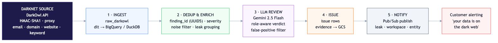
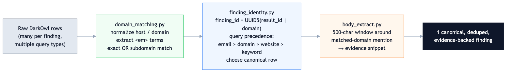
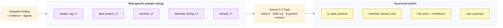

Watching the Dark Web at Scale: A Pipeline That Tells Customers When Their Data Leaks
How I built a Dagster pipeline that queries a darknet-intelligence API, deduplicates the noise, uses Gemini to separate real exposures from false positives, and pushes real-time alerts — so a company learns its credentials are for sale before attackers use them.
TL;DR - Problem: Stolen credentials, breached databases, and company mentions surface constantly on darknet markets, forums, and paste sites — buried in enormous noise and duplicates. Manually triaging it doesn't scale. - Solution: A pipeline that queries the DarkOwl darknet API for customer domains/keywords, deduplicates findings down to one canonical record, uses Gemini to assign each a role and filter false positives, then publishes alerts via Pub/Sub. - Stack: Python 3.12 · Dagster · dlt · Google Gemini 2.5 Flash · BigQuery/DuckDB · PostgreSQL · GCS · Cloud Pub/Sub. - Outcome: Near-real-time, low-false-positive dark-web alerts: "your domain's credentials appeared in a stealer log on this forum."
By the numbers
The problem: the dark web is loud
Dark-web monitoring sounds simple — search for your company's domain, alert if it shows up. In reality it's a signal-to-noise nightmare. A single domain can match thousands of darknet records: stealer logs, breach dumps, market listings, forum chatter, paste sites. The same leak gets reposted across forums for months. And most matches are incidental — your domain mentioned in passing, not actually compromised.
The hard questions are: 1. Is this the same finding I already saw, just reposted? (deduplication) 2. Does this domain appearing here actually mean this company is exposed — or is it a customer's email on someone else's breached service, or pure noise? (role classification) 3. Is it worth waking someone up over? (risk + false-positive filtering)
This pipeline answers all three before anything reaches a customer.
Architecture

Five stages — Ingest → Dedup & Enrich → LLM Review → Issue → Notify — take raw darknet matches and turn them into precise, customer-ready alerts.
Stage 1 — Ingest from the darknet
A DarkOwl API client authenticates with HMAC-SHA1 (public/private key signing) over a proxy, and runs four query types per customer domain — email, emaildomain, domain, and website_mention — plus optional per-tenant keyword scans. It batches 20 domains per request, paginates results, and filters below a "hackishness" score threshold. Raw findings land in BigQuery (prod) or DuckDB (local) via dlt, append-only with schema evolution.
Stage 2 — Deduplication: the noise problem
This is the engineering core. One real finding arrives as many rows — across query types and reposts. Three focused modules collapse that down:

domain_matching.pynormalizes hosts (strips scheme, port, path), extracts the<em>-highlighted match terms from the result body, and confirms a true match — exact domain or subdomain — so a domain is only ever linked to a finding that genuinely mentions it.finding_identity.pyassigns each finding a stablefinding_id = UUID5(result_id | domain), then applies query precedence (email > emaildomain > domain > website_mention > keyword) to pick a single canonical row when duplicates collide — keeping the highest-confidence evidence source.body_extract.pypulls a 500-character window around the matched-domain mention, producing a tight evidence snippet instead of a wall of crawled text.
Two further passes remove exact duplicates and fuzzy reposts (same content resurfacing on different dates), then group related findings into leaks. By the time data leaves this stage, thousands of raw rows have become a handful of canonical, evidence-backed findings.
Stage 3 — LLM review: role-aware triage
Deduplication tells you what's unique; it can't tell you what it means. That's the LLM's job.

Each finding is routed to a role-specific Gemini 2.5 Flash prompt based on its type — stealer log, data breach, dark-web mention, or market listing. The model returns a structured JSON verdict:
is_false_positive— drop incidental noise.matched_domain_role— the key insight: is the domain the subject (first-party compromise), a victim, a service_provider (a customer's account on this domain), a listing (the domain itself being sold), or incidental? That distinction determines whether and how a customer is alerted.risk_level,confidence, and a plain-Englishuser_summaryready to drop into an alert.
It runs deterministically (temperature 0, fixed seed, JSON-enforced) across 8 parallel workers with exponential-backoff retries. This role-classification step is what turns a noisy keyword match into an accurate exposure verdict.
Stages 4 & 5 — Issue creation and real-time notification
Confirmed findings become issues: evidence payloads are uploaded to GCS, and a record is upserted into the issue store. The final asset publishes a compact message — {leak_id, workspace_id, entity_id} — to Google Cloud Pub/Sub, where downstream services pick it up and alert the affected organization in near-real-time. Decoupling detection from delivery via Pub/Sub means alerting can scale and evolve independently of the pipeline.
Orchestration
Built on Dagster, the seven assets run as a daily dependency chain at 01:00 UTC, with a separate 90-day backfill job at 04:00 for onboarding new customers and historical sweeps. A run_id is threaded through every asset for full lineage and reproducibility, and tenacity-based backoff makes the external API calls resilient.
What this project demonstrates
- Hard deduplication & entity-resolution logic — stable identity hashing, source-precedence resolution, normalization, and fuzzy-repost detection over genuinely messy real-world data.
- LLM as a precision classifier — role-aware, structured-output review that turns noisy matches into accurate, low-false-positive verdicts, with prompt routing per finding type.
- Secure external integration — HMAC-signed, proxied API access with batching, pagination, and rate-limit handling.
- Event-driven architecture — GCS evidence storage plus Pub/Sub fan-out, cleanly decoupling detection from customer alerting.
- Multi-environment data engineering — dlt with DuckDB locally and BigQuery + Postgres + GCS in production, all behind one config flag.
Tech stack: Python 3.12 · Dagster 1.13 · dlt 1.21 (BigQuery/DuckDB) · google-genai (Gemini 2.5 Flash) · SQLAlchemy 2.0 · Google Cloud Storage · Cloud Pub/Sub · tenacity · uv.
← Back to portfolio · Download as PDF